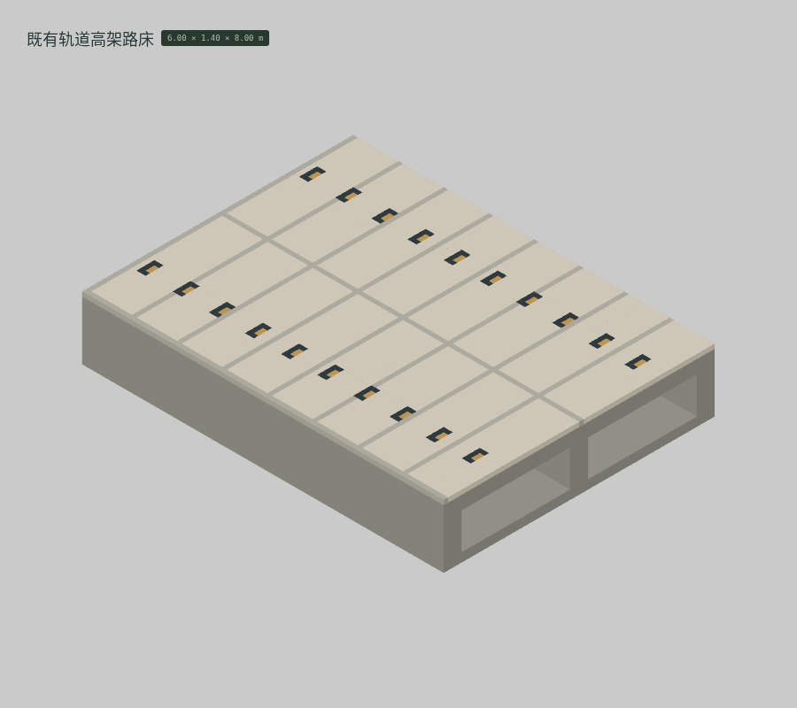

<!doctype html><meta charset="utf-8"><style>*{box-sizing:border-box}body{margin:0;background:#dfe1dd;color:#273d34;font:18px system-ui,'PingFang SC'}header{padding:26px 36px}h1{font-size:30px;margin:0 0 10px}main{display:grid;grid-template-columns:repeat(4,1fr)}figure{margin:0;border:1px solid #b7c0b6;background:#d4d8d1}img{display:block;width:100%}figcaption{padding:13px 22px 18px;font-size:19px}small{display:block;font-size:13px;margin-top:5px}footer{padding:24px 36px}</style><header><h1>云山 · M018 · 按参考图重建的 1 件体素候选</h1>真实编辑器截图 · 保留基础色 · 无纹理 / AO / 辉光 · 原生体素网格（格距标在各模型下方）</header><main><figure><figcaption><b>BUILT-140 既有轨道高架路床</b><small>100 mm 格距 · 36,480 格 · 实际边界 6.00 × 1.40 × 8.00 m</small></figcaption></figure></main><footer>每格独立适配画幅；柜体、灯具和器具比例不是同一个画幅比例尺。几何候选，尚未通过人工美术验收。无图片重绘或贴图冒充几何。</footer>